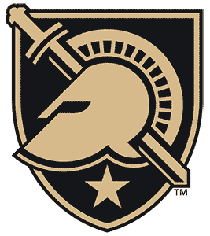

Atlantic Hockey

ArmyArmy is 8-2-0 and 9th in the NPI. Across 500 simulated seasons its median NPI finish is 16th, with a 95% range of 5th to 37th. ELO expects about 6 wins in the next 10.
Next 10 games
- Fri, Nov 27
 at RPI59%
at RPI59% - Sat, Nov 28vs RPI72%
- Fri, Dec 4
 vs Bentley59%
vs Bentley59% - Sat, Dec 5vs Bentley59%
- Thu, Dec 10
 at Penn State60%
at Penn State60% - Sat, Dec 12at Penn State53%
- Sat, Dec 19
 at Maine40%
at Maine40% - Mon, Dec 28
 at LIU68%
at LIU68% - Tue, Dec 29
 vs Ferris St/SLU55%
vs Ferris St/SLU55% - Tue, Jan 5
 at Brown61%
at Brown61%
Win chances from ELO; the dot is stronger the more lopsided the game.
Projected NPI finish
500 simulated seasons, remaining games decided by ELO win chances. Dashed line: median. Shaded: 95% range.